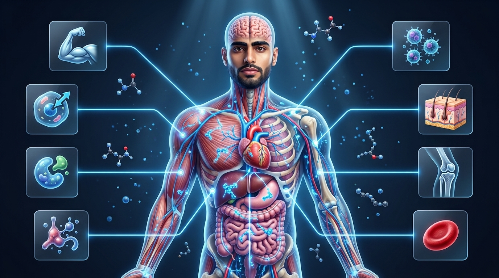
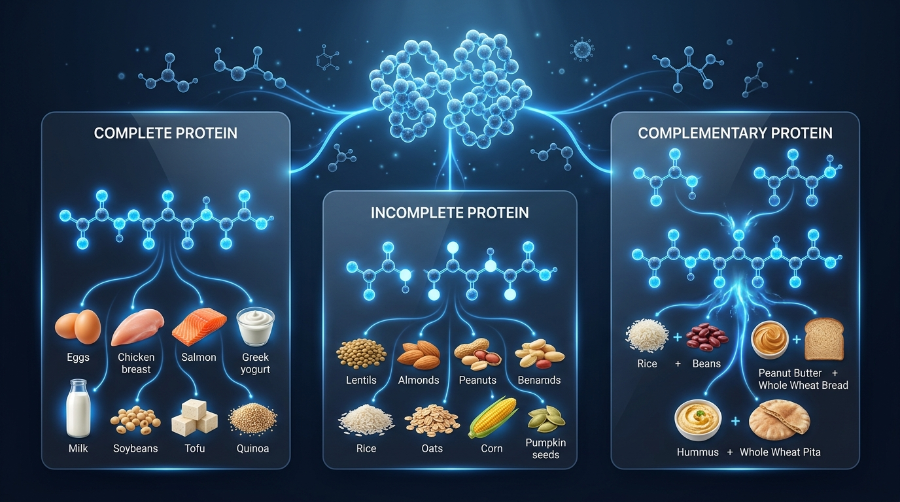
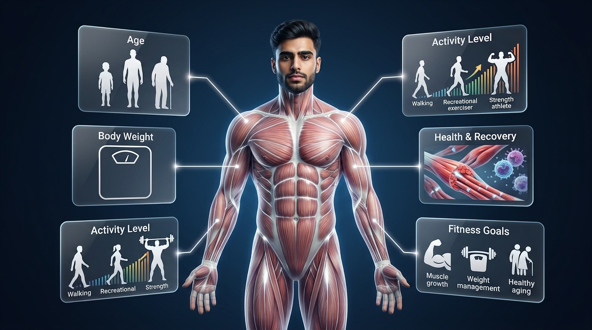
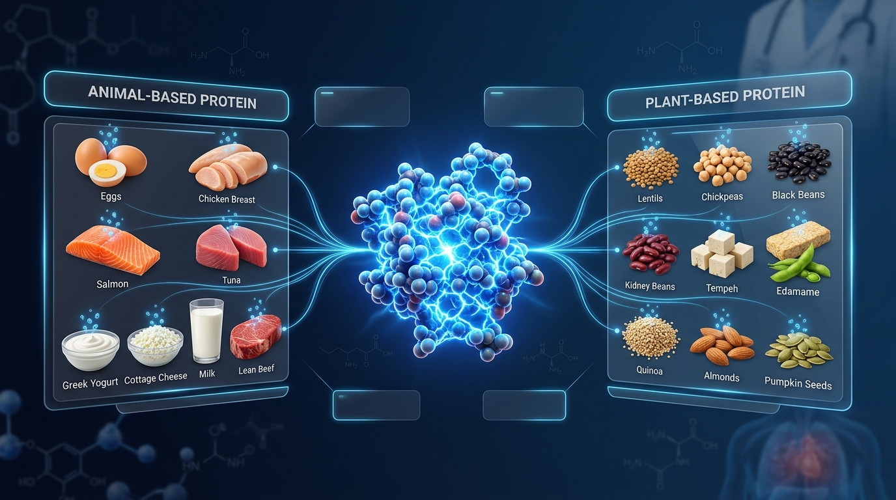
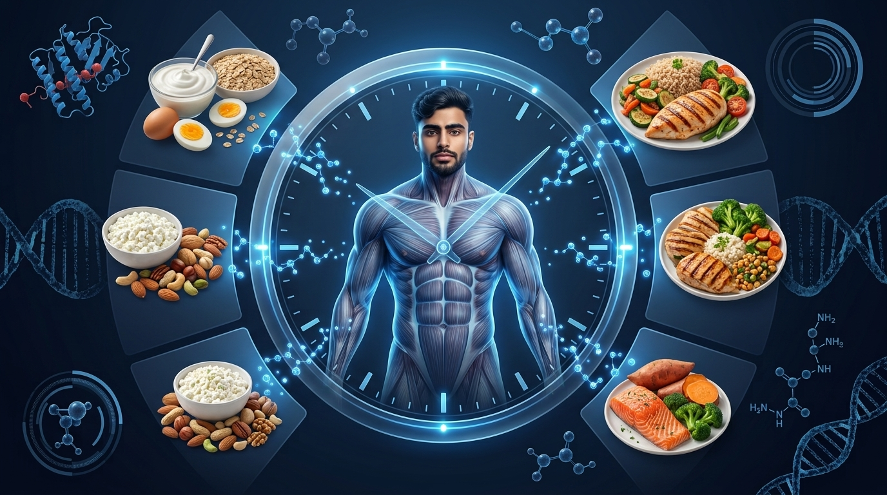
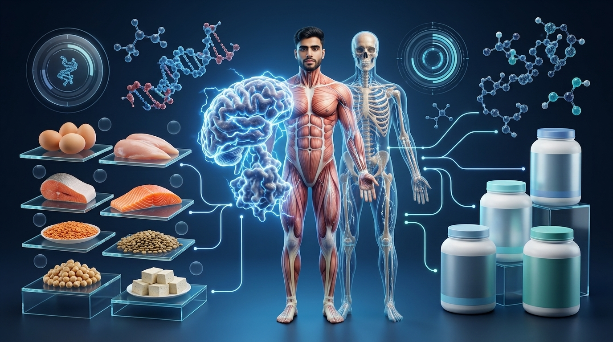
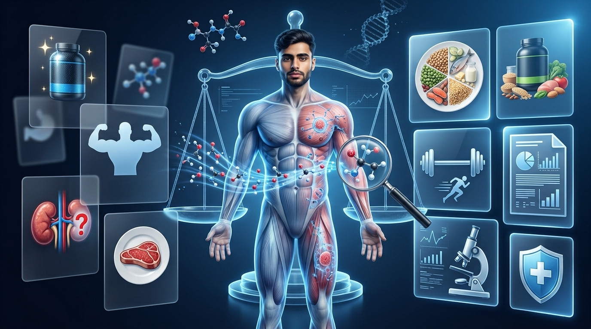
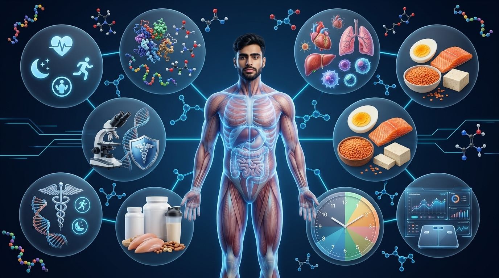

Learn everything you need to know about protein—from its role in your body and daily protein requirements to the best food sources, muscle growth, recovery, fat loss, and common nutrition myths. Whether you're new to fitness or simply want to build healthier eating habits, this science-backed guide provides practical, easy-to-understand advice you can apply every day.
18 min read
Beginner Level
Updated July 2026
Science-Based
Evidence-Based Information
Beginner Friendly
Practical Nutrition Advice
AT
Atul Tomar
Founder • Atul Tomar Fitness
Creating evidence-based fitness and nutrition resources that help beginners build healthier habits through practical, science-backed education.
Learning Overview
Inside This Guide
This guide is designed to take you from understanding the fundamentals of protein to confidently applying science-backed nutrition principles in your daily life. Whether your goal is muscle gain, fat loss, better recovery, or simply healthier eating, you'll finish this guide with practical knowledge you can use immediately.
What You'll Learn
By the end of this guide, you'll understand not only what protein is, but also how to use it effectively to improve your health, performance, recovery, and long-term fitness results.
Understand what protein is and why every cell in your body depends on it.
Learn the difference between complete and incomplete proteins.
Calculate your daily protein intake based on your goals.
Discover the best vegetarian and animal-based protein sources.
Learn how protein supports muscle growth, recovery, metabolism, and fat loss.
Avoid common myths and beginner nutrition mistakes.
Quick Navigation
Explore This Guide
Jump directly to any topic using the navigation below. Whether you're looking for protein basics, daily requirements, food sources, or common myths, every section is just one click away.
Introduction
Understanding Protein from the Ground Up
Protein is far more than a nutrient associated with athletes and bodybuilders. It plays a vital role in building, repairing, and maintaining nearly every tissue in the human body. Before exploring food sources, daily requirements, or supplements, it's important to understand what protein is, how it works, and why it is essential for overall health.
Every second, your body is repairing muscles, producing enzymes, transporting oxygen, supporting your immune system, and replacing old cells. Behind all of these processes is one fundamental nutrient—protein. From healthy skin and strong bones to hormones and antibodies, protein serves as one of the body's most important building blocks.
Unlike carbohydrates and fats, which primarily provide energy, protein has a unique structural role. It helps create and repair tissues while also supporting countless biological functions that keep the body alive and functioning efficiently. This is why adequate protein intake is important not only for athletes but also for children, adults, older individuals, and anyone pursuing better health.
Throughout this guide, you'll learn what protein is made of, how your body digests and uses it, the best dietary sources, recommended daily intake, common myths, and practical strategies for meeting your protein needs through a balanced diet.
Key Facts About Protein
MacronutrientOne of the three essential macronutrients required by the body.
Building BlocksMade up of amino acids that support growth, repair, and body functions.
Primary RoleBuilds and repairs muscles, organs, skin, enzymes, hormones, and immune cells.
Energy ValueProvides approximately 4 calories per gram.
Chapter 01
What Is Protein?
Protein is one of the three essential macronutrients required by the human body. It is made up of amino acids that help build, repair, and maintain muscles, organs, skin, enzymes, hormones, and countless other tissues necessary for life.
Every cell in your body contains protein. From the muscles that allow movement to the enzymes that digest food and the antibodies that protect against disease, protein is involved in nearly every biological process required to sustain life.
Proteins are large, complex molecules constructed from smaller units known as amino acids. These amino acids are linked together in different sequences to form thousands of unique proteins, each performing a specialized function within the body.
Because the human body constantly breaks down and rebuilds proteins, consuming adequate dietary protein is essential for maintaining healthy tissues and supporting growth, repair, recovery, and overall health.
Proteins are formed by long chains of amino acids that fold into unique three-dimensional structures, allowing each protein to perform a specific function inside the body.
Understanding Protein Structure
Think of amino acids as individual building blocks. Just as different combinations of bricks can create houses, bridges, or towers, different sequences of amino acids create thousands of proteins with unique structures and biological functions.
Some proteins provide structural support to muscles and skin, while others transport oxygen, regulate hormones, strengthen the immune system, or accelerate chemical reactions through enzymes. Their function depends entirely on how the amino acids are arranged and folded.
Why This Matters
Understanding protein as a structural nutrient—not simply a muscle-building nutrient—helps explain why every individual, regardless of age or fitness level, requires adequate protein intake. Its role extends far beyond exercise and is essential for maintaining normal body function throughout life.
Chapter 02
Why Protein Matters
Protein is involved in nearly every major function of the human body. Beyond supporting muscle growth, it helps repair tissues, produce enzymes and hormones, strengthen immunity, and maintain healthy skin, bones, and organs throughout your life.
Every cell in your body depends on protein. From your muscles and heart to your skin, hair, brain, and immune system, protein provides the building blocks required to grow, repair, and function properly every day.
Your body is constantly breaking down and rebuilding tissues through a process called protein turnover. Damaged muscle fibers are repaired after exercise, worn-out skin cells are replaced, and countless proteins are recycled every day. Without an adequate supply of dietary protein, these essential maintenance processes become less efficient.
Protein also plays a critical role in producing enzymes that drive thousands of chemical reactions, hormones that regulate body functions, antibodies that defend against infections, and transport proteins that carry oxygen and nutrients throughout the body. In simple terms, protein is essential for keeping your body healthy, strong, and functioning as intended.

Protein supports nearly every major system in the body, including muscles, organs, bones, skin, enzymes, hormones, and the immune system.
Protein Supports More Than Just Muscles
Many people associate protein only with bodybuilding, but its role extends far beyond muscle growth. Every day, your body uses protein to repair damaged tissues, replace old cells, and build new proteins that keep your organs, immune system, and metabolism functioning efficiently.
Whether you are exercising, recovering from an illness, growing during childhood, or simply carrying out normal daily activities, your body constantly depends on protein to maintain its structure and perform thousands of biological processes. This is why consuming enough protein is important for people of all ages—not just athletes.
Why This Matters
Understanding why protein matters helps you make better nutrition choices throughout life. Whether your goal is building muscle, losing fat, improving recovery, supporting healthy aging, or simply maintaining overall health, consuming enough protein provides the foundation your body needs to perform, recover, and stay healthy every day.
Chapter 03
Types of Protein
Not all proteins are the same. Learn the difference between complete, incomplete, and complementary proteins, understand essential amino acids, and discover how different protein sources contribute to a balanced and healthy diet.
Although all proteins are built from amino acids, they differ in their nutritional quality and amino acid composition. Some protein sources provide every essential amino acid your body needs, while others lack one or more. Understanding these differences can help you make informed dietary choices and meet your daily protein requirements more effectively.
Proteins are commonly classified into three categories: complete proteins, incomplete proteins, and complementary proteins. This classification is based on the presence and balance of the nine essential amino acids, which the human body cannot produce on its own and must obtain from food.
Both animal-based and plant-based foods can play an important role in a healthy eating pattern. While many animal foods naturally provide complete protein, a variety of plant foods can also meet protein needs when consumed as part of a balanced and diverse diet.

Protein sources are classified as complete, incomplete, or complementary based on the essential amino acids they provide.
Understanding the Three Main Types of Protein
Complete proteins contain all nine essential amino acids in sufficient amounts. These proteins provide everything the body needs to build and repair tissues, making them high-quality protein sources. Foods such as eggs, dairy products, fish, poultry, soy, and quinoa are well-known examples.
Incomplete proteins are missing one or more essential amino acids or contain them in lower amounts. Many plant-based foods, including beans, lentils, nuts, seeds, and grains, fall into this category. Although individually incomplete, they remain valuable sources of nutrition and contribute significantly to a healthy diet.
Complementary proteins are created by combining different incomplete protein sources so that together they provide all nine essential amino acids. Examples include rice with beans, peanut butter on whole-grain bread, or hummus with whole-wheat pita. Eating a variety of protein-rich foods throughout the day helps ensure an adequate intake of essential amino acids.
Why This Matters
Understanding the different types of protein helps you plan balanced meals that meet your body's amino acid needs. Whether you follow an omnivorous, vegetarian, or vegan eating pattern, including a variety of protein sources throughout the day can support muscle maintenance, tissue repair, immune function, and overall health. The focus should be on consuming adequate protein from diverse, nutrient-rich foods rather than relying on a single source.
Chapter 04
Daily Protein Requirements
Learn how much protein your body needs each day based on age, body weight, activity level, and health goals. Understanding your daily protein requirements can help support muscle maintenance, recovery, growth, and overall well-being.
Protein requirements are not the same for everyone. The amount your body needs depends on several factors, including your age, body weight, physical activity, health status, and personal fitness goals. While a sedentary adult may require only enough protein to maintain normal body functions, athletes, older adults, and individuals recovering from illness or injury often benefit from higher protein intake.
The Recommended Dietary Allowance (RDA) for healthy adults is 0.8 grams of protein per kilogram of body weight per day. This recommendation is designed to meet the basic protein needs of most healthy adults and prevent deficiency. However, it may not represent the optimal intake for individuals with higher physical activity levels or specific health and performance goals.
Research suggests that people who regularly perform resistance training, endurance exercise, or are aiming to build or preserve muscle mass may require greater protein intake than the minimum recommendation. Consuming sufficient protein throughout the day, alongside a balanced diet, helps support muscle protein synthesis, tissue repair, recovery, and overall health.

Daily protein requirements vary depending on age, body weight, physical activity, health status, and individual goals.
Factors That Influence Daily Protein Needs
Your daily protein requirement is influenced by several factors rather than a single recommendation. Age, body weight, physical activity, overall health, and personal goals all play an important role in determining how much protein your body requires to function effectively. Individuals with greater physical demands generally require more protein to support recovery and maintain lean body mass.
While the Recommended Dietary Allowance (RDA) provides a baseline intake for healthy adults, it is intended to prevent protein deficiency rather than maximize athletic performance or muscle growth. People who regularly participate in resistance training, endurance exercise, or physically demanding occupations may benefit from higher protein intake as part of a balanced diet.
Protein requirements should be viewed as a daily target that is achieved through a variety of nutrient-rich foods. Consuming protein across multiple meals throughout the day can help support muscle protein synthesis, tissue repair, and normal physiological functions while contributing to overall dietary quality.
Why This Matters
Understanding your daily protein requirement helps you make informed nutrition choices instead of relying on myths or one-size-fits-all recommendations. Consuming an appropriate amount of protein each day can support muscle maintenance, tissue repair, healthy aging, exercise recovery, and overall well-being. Rather than focusing on a single meal, aim to include high-quality protein sources consistently throughout the day as part of a varied and balanced eating pattern.
Chapter 05
Best Protein Foods
Discover some of the best animal-based and plant-based protein sources, learn their nutritional benefits, and understand how a variety of protein-rich foods can help support a balanced and healthy diet.
Choosing protein-rich foods is an important part of maintaining a healthy diet. Protein is found in a wide variety of foods, including animal-based and plant-based sources, each offering its own combination of nutrients. Including a variety of these foods can help you meet your daily protein requirements while also providing vitamins, minerals, healthy fats, and other beneficial nutrients.
Animal-based foods such as eggs, dairy products, fish, poultry, and lean meat are generally considered high-quality protein sources because they naturally provide all nine essential amino acids. Many of these foods also supply nutrients such as vitamin B12, iron, calcium, zinc, and omega-3 fatty acids, depending on the source.
Plant-based protein foods—including beans, lentils, chickpeas, soy products, nuts, seeds, and whole grains—also contribute significantly to daily protein intake. Eating a diverse range of plant foods helps provide essential nutrients and supports a balanced dietary pattern. Combining different plant protein sources throughout the day can help meet essential amino acid needs while adding variety to meals.

Both animal-based and plant-based foods can provide valuable protein and other essential nutrients as part of a balanced diet.
Animal-Based and Plant-Based Protein Sources
Animal-based protein foods, such as eggs, dairy products, fish, poultry, and lean meat, naturally contain all nine essential amino acids and are often referred to as complete protein sources. In addition to protein, many of these foods provide important nutrients such as vitamin B12, iron, calcium, zinc, and omega-3 fatty acids, depending on the food.
Plant-based protein foods, including beans, lentils, chickpeas, soy products, nuts, seeds, and whole grains, also make valuable contributions to daily protein intake. These foods are rich in dietary fibre, vitamins, minerals, and beneficial plant compounds that support overall health and add variety to meals.
A balanced eating pattern can include protein from either animal-based foods, plant-based foods, or a combination of both. Choosing a wide variety of minimally processed, nutrient-rich protein sources helps support daily protein needs while contributing to an overall nutritious diet.
Why This Matters
Choosing a variety of protein-rich foods instead of relying on a single source helps improve overall diet quality and supports long-term health. Animal-based foods can provide complete protein and several essential micronutrients, while plant-based foods contribute dietary fibre, vitamins, minerals, and beneficial plant compounds. Building meals around diverse, minimally processed protein sources makes it easier to meet your daily protein needs while supporting muscle maintenance, recovery, immune function, and overall well-being.
Chapter 06
Protein Timing
Learn how distributing protein intake throughout the day can support muscle protein synthesis, recovery, and overall nutrition. Discover practical strategies for including protein in regular meals and after exercise.
Consuming enough protein over the course of the day is the most important factor for meeting your nutritional needs. However, how protein is distributed across meals may also influence muscle protein synthesis, recovery, and satiety. Rather than consuming most of your daily protein in a single meal, spreading protein intake throughout the day can help provide a more consistent supply of amino acids to the body.
Including a source of high-quality protein with breakfast, lunch, dinner, and snacks can make it easier to achieve your daily protein target. For people who exercise regularly, consuming protein after training is often included as part of a balanced recovery meal, alongside carbohydrates and adequate hydration.
Protein timing should be viewed as a practical strategy that complements overall daily intake rather than replacing it. Meeting your total daily protein requirement remains the primary goal, while distributing protein across meals may provide additional benefits for muscle maintenance, recovery, and long-term dietary consistency.

Distributing protein intake across multiple meals helps provide a steady supply of amino acids to support muscle protein synthesis, recovery, and overall nutrition.
Why Protein Distribution Throughout the Day Matters
Meeting your total daily protein requirement remains the most important nutritional priority. However, spreading protein intake across breakfast, lunch, dinner, and protein-rich snacks provides your body with a more consistent supply of amino acids throughout the day. This approach can help support normal muscle protein synthesis and overall dietary consistency.
For individuals who participate in resistance training or endurance exercise, including protein as part of a balanced meal after exercise is commonly recommended to support recovery and muscle repair. Pairing protein with carbohydrates and adequate hydration contributes to an effective post-exercise nutrition strategy.
Rather than relying on a single large serving of protein, building meals around regular protein-rich foods throughout the day can make it easier to achieve your daily protein goals while supporting recovery, satiety, and long-term healthy eating habits.
Why This Matters
Focusing on regular protein-rich meals throughout the day can make it easier to achieve your daily protein goals without relying on large portions at a single meal. Including protein with breakfast, lunch, dinner, and post-exercise meals—when appropriate—helps create a sustainable eating routine that supports muscle maintenance, recovery, satiety, and overall health. Consistency over time is generally more important than trying to achieve perfect meal timing.
Chapter 07
Protein Supplements
Learn what protein supplements are, explore the different types available, understand their benefits and limitations, and discover when they may be useful as part of a balanced diet.
Protein supplements are concentrated sources of dietary protein designed to help individuals increase their daily protein intake. They are available in many forms, including powders, ready-to-drink beverages, and protein bars. While supplements can be convenient, they are intended to complement a balanced diet rather than replace whole-food protein sources.
Common protein supplements include whey protein, casein protein, soy protein, and various plant-based protein blends. Each type differs in its protein source, digestion rate, amino acid profile, and intended use. Choosing the most appropriate option depends on individual dietary preferences, nutritional needs, allergies, and personal goals.
For many healthy individuals, daily protein requirements can be met through a balanced diet containing a variety of protein-rich foods. However, protein supplements may be useful for people who have higher protein requirements, limited access to protein-rich meals, busy lifestyles, or increased nutritional needs related to training, recovery, or specific medical guidance.

Protein supplements provide a convenient way to increase daily protein intake, but they are designed to complement—not replace—a balanced diet based on whole-food protein sources.
Understanding Protein Supplements
Protein supplements are concentrated sources of dietary protein that can help individuals meet their daily protein requirements when whole-food intake is insufficient or less practical. They are commonly available as powders, ready-to-drink beverages, and protein bars, offering convenience for people with busy lifestyles or increased protein needs.
Different protein supplements have unique characteristics. Whey protein is rapidly digested and commonly consumed after exercise, while casein protein digests more slowly and provides a gradual release of amino acids. Soy protein is a complete plant protein, and many plant-based blends combine ingredients such as pea, rice, or hemp protein to provide a balanced amino acid profile.
Although supplements can be helpful in certain situations, they should not replace nutrient-rich whole foods. Foods such as dairy products, eggs, legumes, fish, poultry, soy foods, nuts, and seeds provide not only protein but also vitamins, minerals, healthy fats, and other beneficial nutrients that contribute to overall health.
Why This Matters
For most healthy individuals, a varied diet that includes foods such as dairy products, eggs, legumes, fish, poultry, soy foods, nuts, and seeds can provide sufficient protein for everyday health. Protein supplements may be a practical option for people with higher protein needs, busy schedules, or limited opportunities to prepare balanced meals. Choosing supplements as a source of convenience rather than a substitute for nutritious foods helps support both adequate protein intake and overall dietary quality.
Chapter 08
Common Protein Myths
Separate nutrition facts from popular misconceptions by exploring common myths about protein intake, supplements, muscle growth, kidney health, and high-protein diets.
Protein is one of the most widely discussed nutrients in health and fitness, yet it is also surrounded by numerous myths and misconceptions. Advice shared on social media, in advertisements, or through word of mouth can sometimes oversimplify or misrepresent scientific evidence. Understanding the difference between evidence-based nutrition and popular myths helps people make informed dietary choices.
One common misconception is that everyone needs protein supplements to build muscle. In reality, many healthy individuals can meet their daily protein requirements through a balanced diet that includes a variety of protein-rich foods. Supplements can be convenient in certain situations, but they are not a requirement for muscle growth or overall health.
Another widespread belief is that eating more protein automatically results in more muscle. Muscle growth depends on multiple factors, including resistance training, adequate energy intake, sufficient recovery, sleep, genetics, and meeting—but not greatly exceeding—individual protein requirements. Protein is an important component of muscle development, but it works alongside many other lifestyle factors.

Many popular beliefs about protein are misconceptions. Evaluating nutrition advice using reliable scientific evidence helps support informed dietary decisions.
Separating Protein Myths from Evidence
Nutrition advice is widely shared through social media, advertisements, fitness communities, and personal experiences. While some recommendations are supported by scientific evidence, others are based on misconceptions or oversimplified claims. Understanding the difference between myths and evidence-based guidance helps people make more informed decisions about their diet.
For example, protein supplements are often viewed as essential for muscle growth, yet many healthy individuals can meet their protein requirements through whole-food sources alone. Similarly, consuming more protein than the body requires does not automatically result in greater muscle growth, as resistance training, recovery, sleep, and overall nutrition all play important roles in muscle development.
Evaluating nutrition information from reputable health organizations, qualified healthcare professionals, and peer-reviewed scientific research is more reliable than relying solely on trends or anecdotal advice. Developing the habit of questioning nutrition myths encourages lifelong healthy eating practices and evidence-based decision-making.
Why This Matters
Learning to question nutrition claims is an important part of developing healthy eating habits. Before accepting advice about protein, consider whether it comes from qualified healthcare professionals, reputable health organizations, or peer-reviewed scientific research. Building your diet around evidence-based guidance, rather than social media trends or misconceptions, helps you make confident decisions that support long-term health, fitness, and overall well-being.
FAQs
Frequently Asked Questions
Starting your fitness journey can feel overwhelming. Here are answers to the most common beginner gym questions to help you train safely, recover effectively, and build confidence in every workout.
01
Beginner Basics
How much protein do I need each day?
Daily protein needs vary depending on factors such as age, body weight, activity level, health status, and fitness goals. The Recommended Dietary Allowance (RDA) for most healthy adults is 0.8 grams of protein per kilogram of body weight per day, while people who regularly perform resistance training or endurance exercise may require higher amounts. Individual needs are best determined based on your overall lifestyle and nutritional requirements.
02
Warm-Up
Can I get enough protein without using supplements?
Yes. Most healthy individuals can meet their daily protein requirements through a balanced diet that includes protein-rich foods such as dairy products, eggs, fish, poultry, legumes, soy foods, nuts, and seeds. Protein supplements are optional and are primarily used for convenience when it is difficult to meet protein needs through food alone.
03
Training
Are plant-based proteins as good as animal proteins?
Both plant-based and animal-based foods can contribute to a healthy diet. Animal proteins are often complete proteins, while some plant proteins may contain lower amounts of certain essential amino acids. Eating a varied diet with different plant protein sources can help provide all the essential amino acids your body requires.
04
Workout Routine
Is eating more protein always better for building muscle?
No. Muscle growth depends on several factors, including progressive resistance training, sufficient total energy intake, recovery, sleep, genetics, and adequate protein intake. Consuming more protein than your body requires does not automatically result in greater muscle growth.
05
Recovery
When is the best time to eat protein?
Meeting your total daily protein requirement is the most important factor. Distributing protein across meals throughout the day, including after exercise when appropriate, may help support muscle protein synthesis and recovery. Consistency is generally more important than perfect timing.
06
Nutrition
Do high-protein diets harm healthy kidneys?
Current scientific evidence indicates that higher protein intake has not been shown to damage healthy kidneys in healthy individuals. However, people with existing kidney disease or certain medical conditions should follow the dietary advice provided by their healthcare professional, as protein recommendations may differ.
07
Progress
What are the best foods that are high in protein?
Many nutritious foods provide high-quality protein, including eggs, dairy products, fish, poultry, lean meat, soy foods, lentils, beans, chickpeas, quinoa, nuts, and seeds. Choosing a variety of protein-rich foods also provides important vitamins, minerals, healthy fats, and other nutrients that support overall health.
08
Final Advice
Should I choose whole foods or protein supplements?
Whole-food protein sources should be the foundation of a healthy diet because they provide protein along with many other essential nutrients. Protein supplements can be a practical option when convenience or increased protein needs make it difficult to consume enough protein through food, but they are designed to complement—not replace—a balanced diet.
Chapter 10
Key Takeaways
Review the most important lessons from this guide and reinforce the essential concepts that will help you make informed, evidence-based decisions about protein and everyday nutrition.
Throughout this guide, you've explored the fundamentals of protein—from understanding what protein is and why it matters to learning about protein requirements, food sources, meal timing, supplements, and common misconceptions. These concepts work together to provide a strong foundation for making informed nutrition choices that support your overall health and fitness goals.
Rather than focusing on quick fixes or popular trends, the most effective approach is to build sustainable eating habits based on reliable scientific evidence. Consistently consuming adequate protein as part of a balanced diet, staying physically active, and choosing a variety of nutrient-rich foods can contribute to long-term health, muscle maintenance, recovery, and overall well-being.
The following key takeaways summarize the most important ideas from this guide. Use them as practical reminders whenever you plan your meals, evaluate nutrition advice, or make decisions about your daily protein intake.

Building healthy eating habits starts with understanding protein, choosing nutritious foods, meeting your daily needs, and making evidence-based nutrition decisions.
Bringing Everything Together
Protein is an essential nutrient that supports countless functions throughout the body, including tissue repair, muscle maintenance, enzyme production, hormone synthesis, immune function, and overall health. Understanding these roles provides the foundation for making informed dietary choices rather than relying on nutrition myths or short-term trends.
Meeting your individual protein requirements through a balanced diet that includes a variety of high-quality protein sources should remain the primary goal. Whole foods provide protein alongside vitamins, minerals, healthy fats, fiber, and other beneficial nutrients, while protein supplements can serve as a convenient option when appropriate to help meet daily protein needs.
By combining adequate daily protein intake with regular physical activity, sufficient recovery, balanced nutrition, and evidence-based decision-making, you can develop sustainable habits that support long-term health, fitness, and overall well-being. Small, consistent choices practiced over time often have a greater impact than pursuing perfection.
Why This Matters
The knowledge you've gained throughout this guide is most valuable when it becomes part of your everyday routine. Choosing a variety of protein-rich foods, understanding your individual protein requirements, using supplements only when appropriate, and evaluating nutrition advice critically can help you build sustainable habits that support long-term health, fitness, and overall well-being. Small, consistent improvements practiced over time often lead to greater results than pursuing short-term perfection.
Continue Your Fitness Journey
You've Completed the Beginner's Guide to Protein
Congratulations on completing this guide. You now have a strong understanding of protein, including its functions, daily requirements, food sources, meal timing, supplements, and the importance of making evidence-based nutrition decisions. Keep building on this knowledge to support your long-term health and fitness goals.
Learning about nutrition is an ongoing journey. Every informed choice you make—from selecting balanced meals to understanding how protein supports your body—helps create healthier habits that can last a lifetime. Small, consistent improvements often produce greater long-term results than chasing quick fixes or temporary trends.
At Atul Tomar Fitness, our mission is to provide reliable, beginner-friendly, and evidence-based fitness education. Whether you're looking to improve your nutrition, learn proper exercise technique, or use practical health calculators, you'll find resources designed to help you continue learning with confidence.
Exercise Library
Explore step-by-step exercise guides with proper technique, common mistakes, muscles worked, benefits, and beginner-friendly tips to build safe and effective workout routines.
Nutrition Guides
Continue learning with evidence-based articles covering nutrition fundamentals, healthy eating habits, vitamins, minerals, hydration, weight management, and sports nutrition.
Fitness Calculators
Use practical fitness calculators to estimate calories, protein needs, BMI, body fat percentage, lean body mass, water intake, and other health metrics to support your goals.
Evidence-Based Learning
Every guide is designed to simplify complex fitness and nutrition topics using trusted scientific research, practical explanations, and beginner-friendly educational content.
Keep Learning. Keep Growing.
Continue Building Your Knowledge with Atul Tomar Fitness
Completing this guide is just the beginning. Explore our growing collection of exercise tutorials, nutrition resources, fitness calculators, and evidence-based articles designed to help you make informed decisions and achieve your health and fitness goals with confidence.
"Good health isn't built through perfection—it's built through consistent, informed choices made one day at a time."
Thank you for reading the Beginner's Guide to Protein. We hope this guide has helped you better understand the importance of protein and empowered you to make confident, evidence-based nutrition decisions. Continue exploring our educational resources to strengthen your knowledge, improve your fitness, and build healthy habits that last a lifetime.